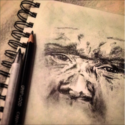
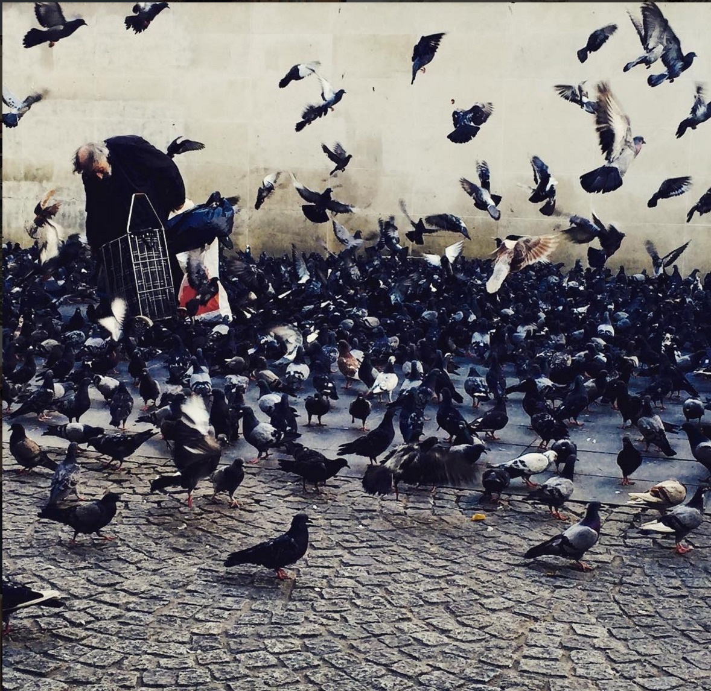

Julia Lauren Smadja
<<<<<<< HEADAnalytics. Web Development. Event Management.
About
I'm Julia Smadja, I am still learning my likes and dislikes in the field I have chosen, Business and Analytics. I'm a Graduate Student at American University, studying Business Analytics. I'm also trying to develop my knowledge in web programming. I have been taking classes at General Assembly in HTML and CSS. Hoping to learn JavaScript, as well as a back-end web development language, such as, Python, R, or Ruby. I have always greatly enjoyed learning math which is why I decided to look into Analytics and coding, it is a very logical subject.
Portfolio
Drawings
I have always loved drawing and being artistic. My struggle has been innovation and imagination. However once I have found an inspiration I, very much, enjoy to draw.

Photographs
Pictures is a different type of art that I enjoy using. I especially used my pictures to then use it as inspiration for a painting or drawing.
